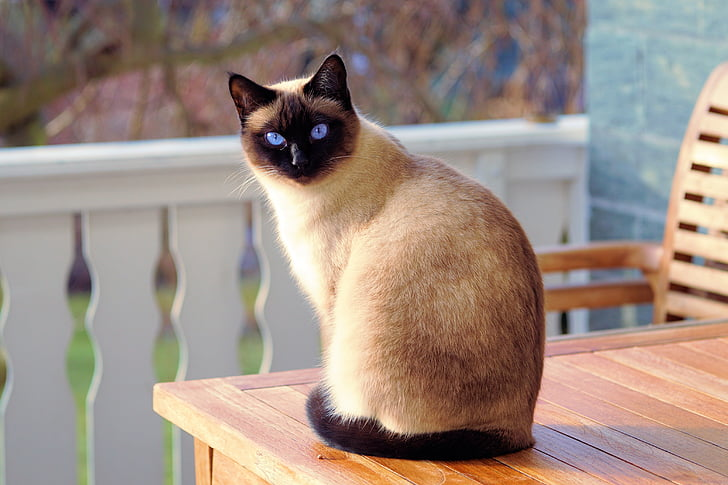
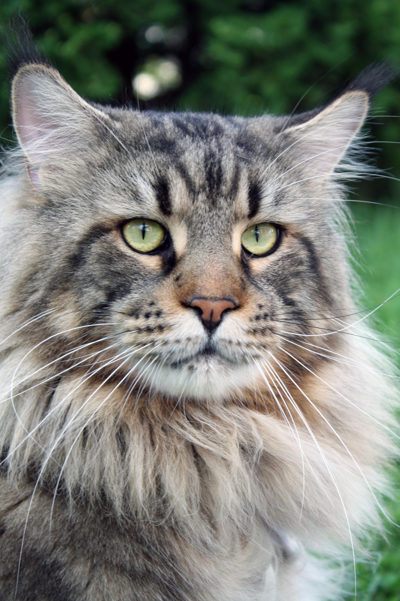
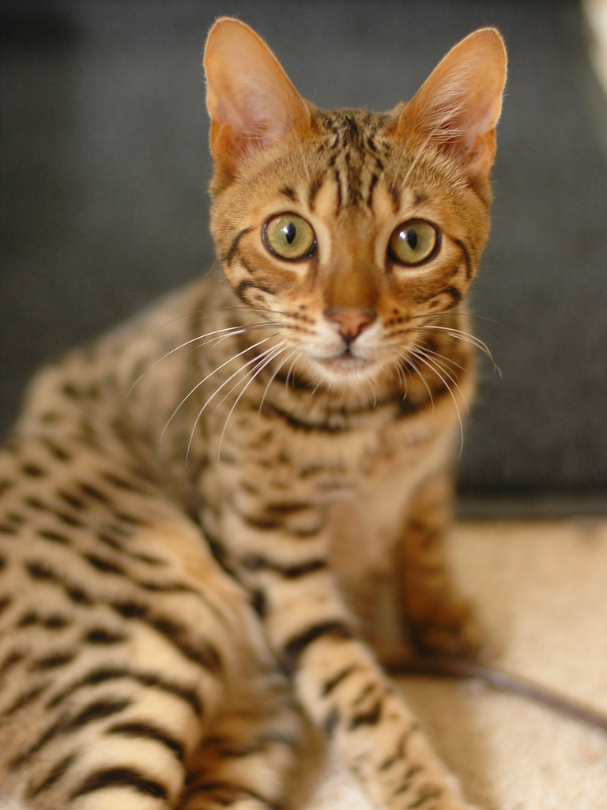
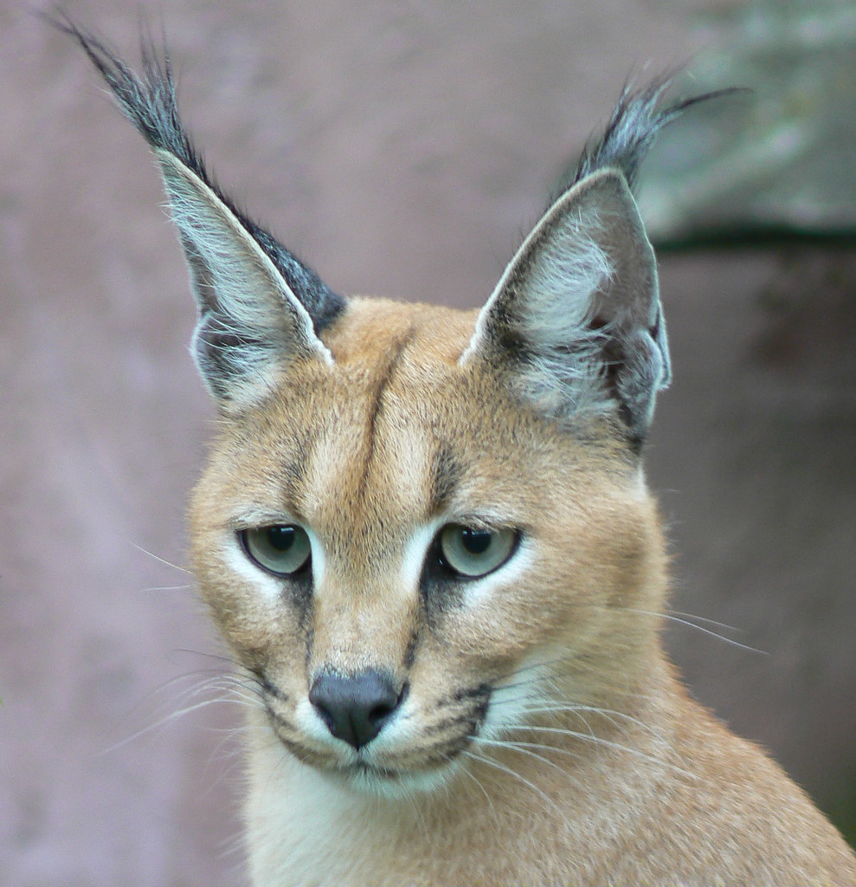
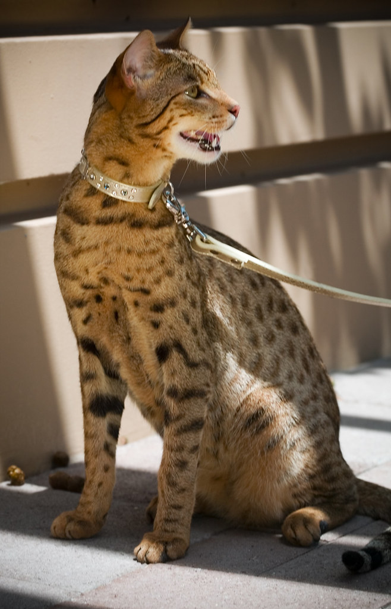

O plemenách
Najväčšia medzinárodná organizácia zastrešujúca chov mačiek, asociácia chovateľov mačiek (CFAA) rozoznáva 45 plemien mačky domácej, z ktorých sa niektoré chovajú tisíce rokov, zatiaľ čo iné vznikli len nedávno a ešte si len hľadajú svojich priaznivcov.
Vznik plemien
Mačka domáca žije v prítomnosti ľudí už tisíce rokov a za ten čas sa vyvinula do rôznych veľkostí a podôb. Tak ako u iných domácich zvierat aj u mačiek domácich chovatelia ovplyvňovali šľachtením ich vývoj a utvárali tak požadované povahové a exteriérové vlastnosti jednotlivých plemien.
Známe plemená:
- Perzská mačka
- Mainská mývalia mačka
- Európska krátkosrstá mačka
- Bengálska mačka
- Sibírska mačka
- Siamská mačka
Plemená mačiek môžeme rozdeliť na:
- krátkosrsté
- polodlhosrsté
- dlhosrsté
| Názov a vzhľad | Cena | |
|---|---|---|
| Nórska lesná mačka |  | 600 $ - 3 000 $ |
| Bengáslska mačka |  | 1000 $ - 4000 $ |
| Karakal |  | 7000 $ - 10000 $ |
| Ashera |  | 22000 $ - 100 000 $ |
| Cena plemena závisí hlavne od krajiny a kvality. | ||